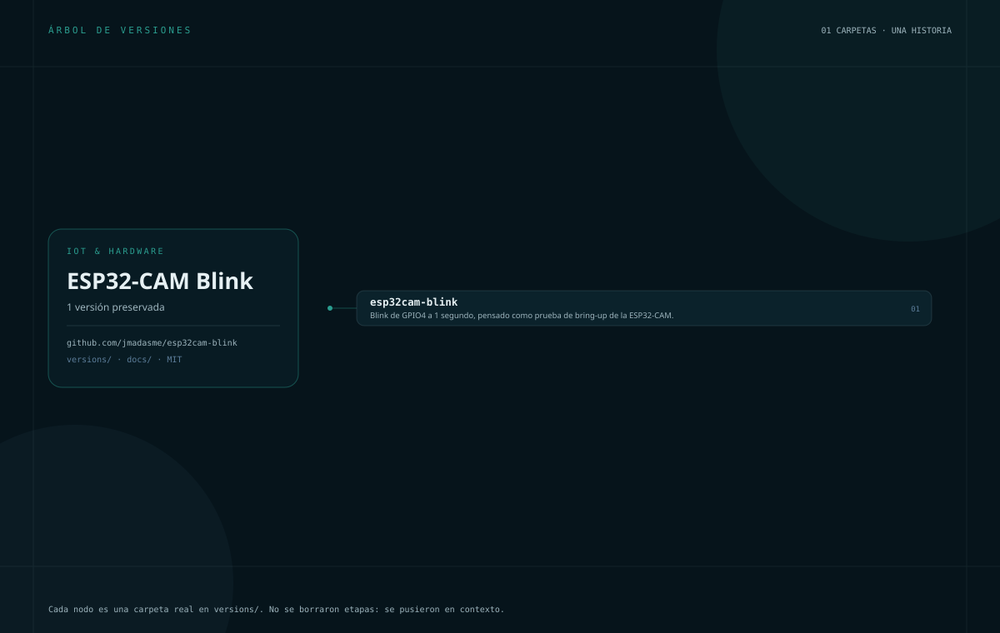

esp32cam-blink
5 archivosBlink de GPIO4 a 1 segundo, pensado como prueba de bring-up de la ESP32-CAM.
Ver carpetaUn blink mínimo sobre la placa AI-Thinker con OV2640, para verificar alimentación y GPIO antes de pelear con video.

Sketch de una sola tarea: encender y apagar el LED de flash en GPIO4 cada segundo. Es la prueba más barata para confirmar que la placa AI-Thinker arranca y que la herramienta de carga funciona.
La ESP32-CAM falla por alimentación o por el modo de carga, pero es fácil culpar a la cámara o al código equivocado.
Separar el bring-up: primero un blink sin cámara ni WiFi, después el resto del proyecto.
Un blink mínimo sobre la ESP32-CAM AI-Thinker con OV2640 para verificar alimentación, GPIO y monitor serie antes de pelear con video. Un solo sketch, un LED en GPIO 4 y un ciclo de un segundo.
Un blink mínimo sobre la ESP32-CAM AI-Thinker con OV2640 para verificar alimentación, GPIO y monitor serie antes de pelear con video. Un solo sketch, un LED en GPIO 4 y un ciclo de un segundo.
El sketch no usa la cámara a propósito: primero se valida alimentación, GPIO y serial.
Cada carpeta conserva una etapa del proyecto. No se borraron las anteriores: se pusieron en contexto.
Blink de GPIO4 a 1 segundo, pensado como prueba de bring-up de la ESP32-CAM.
Ver carpetaSketch mínimo para la ESP32-CAM AI-Thinker: enciende y apaga el LED de flash en GPIO4 cada segundo y escribe el estado por el puerto serie. No inicializa cámara, WiFi ni tarjeta SD.
Es una prueba de bring-up, no un proyecto de visión. Sirve para separar dos problemas que suelen confundirse: una placa mal alimentada o mal puesta en modo de carga, y un firmware que no corresponde. Importa porque la ESP32-CAM falla con frecuencia por corriente insuficiente o por el proceso de carga, y conviene descartar esas causas antes de atribuir el fallo al sensor OV2640 o al código de la aplicación.
El README original de la versión de referencia, completo.
Proyecto Arduino minimalista que hace parpadear el LED de flash blanco integrado (GPIO 4) de la placa ESP32-CAM (AI-Thinker) con un ciclo de 1 segundo encendido y 1 segundo apagado.
La ESP32-CAM AI-Thinker tiene un LED de flash blanco de alta intensidad montado en la PCB junto a la lente de la cámara OV2640. Este LED está conectado al GPIO 4 del ESP32 y es controlado mediante un transistor MOSFET de canal N que permite conmutarlo con la lógica de 3.3V del microcontrolador.
El sketch configura el GPIO 4 como salida digital y alterna su estado entre HIGH y LOW cada 1000 ms, generando un parpadeo continuo.
| Parámetro | Valor |
|---|---|
| Placa | ESP32-CAM (AI-Thinker) |
| Microcontrolador | ESP32-D0WD-V3 (Xtensa LX6 dual-core @ 240 MHz) |
| LED | Flash blanco integrado en GPIO 4 |
| Ciclo de parpadeo | 1s ON / 1s OFF |
| Flash usado | 298 KB (9% de 4 MB) |
| RAM usada | 22 KB (6% de 320 KB) |
| Puerto serie | 115200 baud |
| FQBN | esp32:esp32:esp32cam |
| Pin | Modo | Conexión | Notas |
|---|---|---|---|
| GPIO 4 | OUTPUT | LED Flash blanco integrado | HIGH = encendido, LOW = apagado |
| GPIO 1 | U0TXD | TX del monitor serie | Conectar al RX del adaptador USB-TTL |
| GPIO 3 | U0RXD | RX del monitor serie | Conectar al TX del adaptador USB-TTL |
| 5V | POWER | Alimentación 5V | Conectar al VCC del adaptador USB-TTL |
| GND | POWER | Tierra común | Conectar al GND del adaptador USB-TTL |
| GPIO 0 | INPUT | Boot mode (programación) | Conectar a GND durante el upload |
┌──────────────────────────────────┐
│ ADAPTADOR USB-TTL │
│ ┌───────────┐ ┌──────────┐ │
│ │ USB a PC │ │ PINES: │ │
│ │ │ │ TX ─────┼───┼──── GPIO 3 (U0RXD)
│ │ │ │ RX ─────┼───┼──── GPIO 1 (U0TXD)
│ │ │ │ 5V ─────┼───┼──── VCC (5V)
│ │ │ │ GND ─────┼───┼──── GND
│ └───────────┘ └──────────┘ │
└──────────────────────────────────┘
│
│ USB
▼
[PC/Laptop]
Nota: La ESP32-CAM no tiene puerto USB nativo. Requiere un adaptador USB-TTL (FTDI, CP2102, CH340, etc.) conectado a sus pines serie.
arduino-cli)bash
arduino-cli core install esp32:esp32dialout en Linux)git clone <url-del-repositorio>
cd esp32cam-blink
arduino-cli compile --fqbn esp32:esp32:esp32cam esp32cam-blink.ino
bash
arduino-cli upload -p /dev/ttyUSB0 --fqbn esp32:esp32:esp32cam esp32cam-blink.inoEl LED blanco de la ESP32-CAM debe comenzar a parpadear (1s encendido, 1s apagado).
Para ver los mensajes del monitor serie:
arduino-cli monitor -p /dev/ttyUSB0 -c baudrate=115200
Deberías ver:
ESP32-CAM Blink iniciado
LED Flash en GPIO 4 | Ciclo: 1000ms ON / 1000ms OFF
LED ON
LED OFF
LED ON
LED OFF
...
No requiere calibración. Si se desea cambiar la velocidad de parpadeo, modificar la constante BLINK_DELAY_MS en esp32cam-blink.ino:
const int BLINK_DELAY_MS = 500; // Parpadeo más rápido (0.5 segundos)
esp32cam-blink/
├── esp32cam-blink.ino # Sketch principal
├── README.md # Esta documentación
├── PLAN.md # Plan de implementación
├── AUDIT_REPORT.md # Informe de auditoría
├── .gitignore # Exclusiones git
└── docs/
├── datasheet.md # Documentación de usuario
└── developer.md # Documentación técnica del código
Proyecto educativo de código abierto.
Las primeras versiones existen para que estos errores no se repitan: cada una dejó una decisión de diseño verificable.
La placa consume unos 250 mA con el LED encendido y no debe alimentarse desde el pin de 3,3 V del adaptador USB-TTL. El datasheet indica usar la entrada de 5 V del regulador y una fuente estable, porque la caída de tensión es el fallo más habitual en esta placa.
El upload exige poner GPIO0 a GND, pulsar RST, cargar y volver a resetear sin ese puente. No hay auto-reset por USB, de modo que omitir la secuencia deja la placa en modo normal y el puerto no responde como se espera.
Seis criterios con la misma escala en todo el catálogo, para comparar sin marketing.
Este sketch no la usa. Su objetivo es probar la placa y la carga.
El de flash, conectado a GPIO4 en la AI-Thinker.
Sí, cambiando el pin del LED y el FQBN.
No para el blink.
Sí, es la primera práctica de la placa.
Usá esta familia como base para esp32-cam blink. Está documentada para que puedas entenderla, ejecutarla y continuarla sin adivinar.